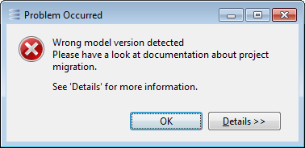

Migration in details
Each viewpoint comes with an additional contribution to manage migration of its data. These contributions are used by Capella when the user launch the migration on his model.
If a viewpoint requires a migration of its data, the model can't be opened and the following error dialog is displayed:

Viewpoint version support
A sanity check is perform before the model is opened to ensure that each used viewpoint is available and in the expected version.
Version numbers follow the usual eclipse convention: major.minor.micro.qualifier For example: 1.1.0.20161004114119
When a viewpoint is updated in the platform, if its version major or minor number is upgraded the existing models will need a migration.